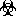

Tutorial¶
Prosty tutorial zawierajacy podstawowe formatowania w restructuredText
New in version master.
nowa wersja masterowa praca w srode
Naglowki¶
Kolejne sekcje deklarujemy (zagniezdzamy) w nastepujacy sposob:
Tutorial (glowny na strone)
***************************
Powinien byc tylko jeden taki naglowek na dana strone,
-- dodatkowo naglowek ten bedzie uzyty jako rozdzial przy
konwersji do .pdf
Naglowki (sekcje strony)
========================
H3 - Podsekcje
--------------
H4 - Podpodsekcje
+++++++++++++++++
Powoduje to zagniezdzanie kolejnych paragrafow w drzewe (w tym przypadku tutoriala) jak po lewej, a naglowki paragrafow dodaja sie jak poniżej:
Styl tekstu¶
**bold**
*italics*
| Tekst podzielony
| na linie
| zaczyna sie od '|'
| i spacji
| tak jak ten tekst
ktory edytuje sie zgodnie
ze znakami nowej linii
ktory edytuje sie zgodnie ze znakami nowej linii
Listy¶
* Cos.
* Cos jeszcze.
albo
1. Punkt 1
2. Punkt 2
3. Punkt 3
albo
- Cos.
- Jeszcze cos.
- I znowu cos.
- Cos.
- Cos jeszcze.
albo
- Punkt 1
- Punkt 2
- Punkt 3
albo
- Cos.
- Jeszcze cos.
- I znowu cos.
Tabelki¶
Skomplikowana tabela:
+--------------+--------------+-------------+
| Naglowek 1 | Naglowek 2 | Naglowek 3 |
+==============+==============+=============+
| wiersz 1 | kolumna 2 | kolumna 3 |
+--------------+--------------+-------------+
| wiersz 2 | Polaczone komorki. |
+--------------+--------------+-------------+
| wiersz 3 | Polaczone | - komorki |
+--------------+ komorki. | - zawieraja |
| wiersz 4 | | - punkty |
+--------------+--------------+-------------+
Prosta tabelka:
===== ===== =======
Wejscia Wyjscia
------------ -------
A B A or B
===== ===== =======
False False False
True False True
False True True
True True True
===== ===== ======
Wynik:
Skomplikowana tabela:
Naglowek 1 Naglowek 2 Naglowek 3 wiersz 1 kolumna 2 kolumna 3 wiersz 2 Polaczone komorki. wiersz 3 Polaczone komorki.
- komorki
- zawieraja
- punkty
wiersz 4 Prosta tabelka:
Wejscia Wyjscia A B A or B False False False True False True False True True True True True
Linki¶
Zwykly link zewnetrzny:
`Glowne repozytorium CECP <http://git.cadc.pl/>`_
Zwykly link zewnetrzny: Glowne repozytorium CECP
Odnosnik do jakiejs sekcji na tej stronie:
`Tabelki`_
Odnosnik do jakiejs sekcji na tej stronie: Tabelki
Obrazy¶
.. _to_lena: <---- to jest 'link' do zdjecia, dziala jak zwykly odnosnik (patrz Linki)
.. figure:: images/lena.png
:align: center
:scale: 50 %
To jest Lena w rozmiarze 50% oryginalu.

To jest Lena w rozmiarze 50% oryginalu.
Obrazek, ktory szukasz to_lena_.
Obrazek, ktory szukasz to_lena.
Pobieranie¶
:download:`Zdjecie Leny<images/lena.png>`
{kind=link}
:download:`Jakis .pdf<basics/iaas-training-basic.pdf>`
Podstawienia¶
.. |biohazard| image:: images/biohazard.png
Symbol |biohazard| musi byc umieszczany na opakowaniach z odpadami radioaktywnymi.
Symbol  musi byc umieszczany na opakowaniach z odpadami radioaktywnymi.
Note
Podstawienia moga okazac sie bardzo przydatne gdy zdefiniujemy je w osobnym pliku .rst i dolaczymy go za pomoca ‘.. include’ na gorze kazdego pliku. Wtedy zawsze mozemy z nich korzystac
.. include myfile.rst
taka dyrektywa powoduje 'wpisanie' zawartosci myfile.rst w tym pliku
Table of Contents¶
Nowe sekcje dokumentacji tworzymy jako nowy plik .rst i podpinamy go do source/index.rst jak ponizej:
.. toctree::
:maxdepth: 2
:hidden:
:caption: Basic stuff
basics/README // tu dopisujemy nazwe pliku
tutorial // bez rozszerzenia
Istniejace sekcje po prostu edytujemy w danym pliku .rst
Oznaczenia zwracajace uwage¶
.. note:: Wiadomosc
.. warning:: Ostrzezenie
.. seealso:: Zobacz
.. tip:: Porada
.. versionadded:: 1.0.5
.. versionchanged:: 2.4.7
Note
Wiadomosc
Warning
Ostrzezenie
See also
Zobacz
Tip
Porada
New in version 1.0.5.
Changed in version 2.4.7.
Kod w tekscie¶
Surowy kod mozna wklejac po podwojnym dwukropku::
def my_fn(foo, bar=True):
"""A really useful function.
Returns None
"""
Surowy kod mozna wklejac po podwojnym dwukropku:
def my_fn(foo, bar=True):
"""A really useful function.
Returns None
"""
::
(pusta linia)
(spacja)kod kod kod
(spacja)kod kod kod
...
(brak spacji) koniec bloku
Kod wklejony ‘w linie’ tekstu wklejamy za pomoca `` (podwojny backtick):
To jest kod wklejony w linie: ``def my_fn(foo, bar=True)``
To jest kod wklejony w linie: def my_fn(foo, bar=True)
Zewnetrzne instrukcje¶
Jesli cos nie dziala, najpewniej brakuje odstepow pustych linii lub spacji. Bardziej szczegolowy opis tych i innych mozliwosci restructuredText mozna znalezc np pod adresami: